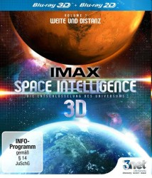

 
 IMDB-Wertung: 0.0 / 10
IMDB-Wertung: 0.0 / 10  Metascore:
Metascore: 
Die einzigartige visuelle Darstellung von Zeit, Größe, Distanz und Abstand lässt uns verstehen wie groß, wie wirklich groß, und wie weit, wie wirklich weit, das Universum ist.
Durch ultra-hochauflösende und hyper-realistischer 3D-Computergrafik können wir erstmals das unvorstellbare Ausmaß des Universums verstehen.
IMAX Space Intelligence 3D – Die Entschlüsselung des Universums wurde von IMAX für die Vorführung in Sternenwarten entwickelt und 2014 mit dem “International 3D & Advanced Imaging Society s 3D Creative Arts Award für beste hochauflösende real 3D Darstellung ausgezeichnet.
Jahr:
Dauer: 48 Minuten
FSK:
Land: Studio: Tonspuren: DTS - ,
Untertitel:
Auflösung: 1080p (1920x1080) Größe: 3112 MB
Genre: Dokumentation
Regisseur:
Drehbuch: Doug Atchison
Soundtrack:
Darsteller:
Datei: X:\Dokumentationen\Weltraum\Space Intelligence Die Entschlüsselung des Universums - Weite und Distanz (, FSK, 1920x1080) 3D.mkv seit 03.03.2015
Festplatte: HD Serien(SU-Z)+Dokus+Musik
 Es gibt insgesamt 22 Filme in der Gruppe 'Dokumentationen\Weltraum'
Es gibt insgesamt 22 Filme in der Gruppe 'Dokumentationen\Weltraum'